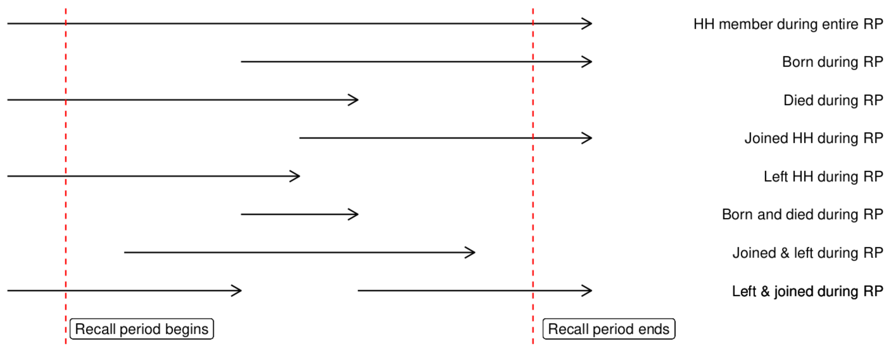

Standard Mortality Survey
Objectives
- Calculate person time at risk
- Use
{srvyr}to estimate mortality rates
Introduction
This session focuses on how to do a basic analysis of data from a retrospective mortality survey using the MSF standard mortality survey protocol. We will be using a case study wherein a survey was conducted following a cholera epidemic in Haiti in 2010.
This session assumes you have completed the basic learning pathway for R and are able to:
- Import data
- Perform basic cleaning using
case_when() - Aggregate data using
count()andsummarize() - Produce tables using
gt()
If you need to revisit or learn any of these topics, please refer to the core sessions of the learning pathway.
Setup
This session uses a specific case study. Download and unzip the associated folder then open the main.R script from the R folder:
The folder you have downloaded contains a (mostly) empty R script as well as Excel files for the Kobo form used in the survey and the data collected with it.
Take a minute to open and investigate both the Kobo form and the raw data. What is contained in the different tabs of the dataset?
Import
Our dataset has two tabs, the first contains household level data and the second contains individual data. For now, we are most concerned with data about the individuals but we will ultimately need both. Let’s load it all into R (as well as the packages we will be using in today’s session).
In your script (main.R), add an appropriate header for the file and create a section that loads the following packages:
hereriogtsrvyrtidyverse
Then create a new section called Import and use rio to import the second sheet of your dataset into an object called df_raw. We don’t need all of the columns of this data, use select() to select only the following:
sexagebornborn_datejoinedjoined_dateleftdieddied_datedied_cause_parent_indexrenamed ashh
Then create a second object called df_hh containing the first sheet of your dataset keeping only the following columns:
interview_dateclst_id_indexrenamed ashhpresentconsent
Hint. Remember that when using select() you can quickly rename something by using an =, for example: hh = '_parent_index'.
First Look (and Recoding)
Great! Now that we’ve loaded our data let’s take a first look at our data. One of the first things we can do is check the structure of our data:
df_raw |>
str()We might also want to quickly check how many individuals in the dataset had died as our survey focuses on mortality:
df_raw |>
count(died)Use count() to determine how many participants you had by sex.
Hm, 1 and 2 for sex are a bit ambiguous. It might be helpful to recode our categorical data to use more meaningful labels. For example:
df <- df_raw |>
# recoding
mutate(sex = case_when(sex == 1 ~ 'Male',
sex == 2 ~ 'Female`,
.default = NA))Create a new section in your script called Cleaning. This section will have a “cleaning pipe” that will take df_raw, perform several cleaning steps, and store the resulting dataframe into an object called df.
Using case_when(), create a new step in your cleaning pipe that recodes the categorical variables in your dateset. You can use the above recoding for sex. For the variables born, joined, left, died use the recoding:
- 0 = No
- 1 = Yes
- 99 = Unknown
For died_cause use the recoding:
- 1 = Diarrhoea
- 2 = Fever
- 3 = Respiratory Disease
- 4 = Accident
- 5 = During Delivery
- 6 = Other
- 99 = Unknown
- NA = Did Not Die
The head of df should look like this:
sex age born_date joined_date left_date died_date born joined left died
1 Female 23 <NA> <NA> <NA> <NA> No No No No
2 Male 30 <NA> <NA> <NA> <NA> No No No No
3 Female 11 <NA> <NA> <NA> <NA> No No No No
4 Female 5 <NA> <NA> <NA> <NA> No No No No
5 Male 1 <NA> <NA> <NA> <NA> No No No No
6 Female 19 <NA> <NA> <NA> <NA> No No No No
died_cause hh
1 Did Not Die 1
2 Did Not Die 1
3 Did Not Die 1
4 Did Not Die 1
5 Did Not Die 1
6 Did Not Die 1Now that we have nicer labels, let’s explore our data a bit more. For example:
- How many people died of each potential cause?
- Look at the combinations of died, left, joined, and born. Which combinations are the most common? Does this make sense?
- Who died more, males or females? Who was more at risk?
Hint. Remember that you can give multiple column names to count() in order to create contingency tables.
Cleaning
Dates as (Simple) Dates
Let’s finish tidying up our data for analysis. One ting we need to do is make sure our data is all of the right type. We have already recoded everything for the categorical variables but we haven’t yet looked at dates.
class(df_raw$born_date)[1] "POSIXct" "POSIXt" It looks like our dates are of the type POSITct, let’s convert them to a more simple date format using ymd() from {lubridate}.
Add a step to your cleaning pipleing that uses ymd() from {lubridate} to convert the dates for born_date, joined_date, left_date, and died_date to simple dates.
The class() of df$born_date should now be Date:
class(df$born_date)[1] "Date"Fixing Logical Issues
A well designed Kobo form can go a long way to ensure we are collecting good quality data right from the start. For instance, we can make certain questions required to avoid missingness. We can also create “constraints” that will produce error messages when entered data violates preset rules; for example we might create a constraint that does not let the surveyor enter a date of death that falls outside the recall period.
Open the Kobo survey Excel file retrospective-mortality_kobo.xlsx and take a look at the column “constraint”. What were the constraints created in this file? Can you think of anything that wasn’t accounted for?
Despite all of the protections we set up in the collection process there will always be a bit of cleaning needed. For example, while we have made sure that all dates fall within the recall period we didn’t create checks for other illogical relationships between dates. Let’s take a look, for instance, to see if anyone was born after they had died:
df_raw |>
filter(died_date < born_date)Use filter() to check for instances of people who joined the family after they had died. How many times did this happen?
The head of your output should look like this:
sex age born_date joined_date left_date died_date born joined left died
1 1 23 <NA> 2010-12-18 <NA> 2010-12-08 0 1 0 1
died_cause hh
1 1 1524Well that’s not great. How should we fix this? The exact best practice here is subject to a bit of debate but we recommend that you retain the date for death and remove the date for birth / joined (ie: reassign it to NA). Alternatively, if you catch this error during data collection you can ask the interviewer about the error. It may be the case that it was a typo and they remember the appropriate dates. Where possible, try to do this type of oversight on a daily basis so that issues can be corrected in real-time.
If we can only keep one date, why do we give preference to the date of death? The date of death is the more important variable for the purpose of this particular survey and is also a rare event, meaning that any lost dates might have a disproportionate impact on results. Additionally, we might expect that the date of death is more likely to be reliable compared to other dates (such as the exact date of birth or when someone joined / left the household).
In this instance, there were only a couple cases of “birth or joining the household after death” out of a dataset of over 18,000 people so removing their birth / join dates isn’t a huge deal. If errors like this are more common, however, it may signal an important problem with the form design and / or the training of the surveyors. Quickly looking for problems like this (even in Excel) after the pilot and during the data collection phase can help bring your attention to any issues while you still have time to fix them.
Using mutate() and case_when(), add a step to your cleaning pipe to replace the problematic birth / joined dates with NA. How can you check if this worked correctly?
Can you see any other issues in the data? I see two:
- There are a few people who were born within the recall period but have an age greater than 0
- One person died after having left the household
How would you handle these two issues? Think about the types of problems that might have produced them and the consequences of different cleaning strategies on your final results.
Bonus. Do you think either of these could have been prevented through a better Kobo design?
Let’s consider the issue of being born in recall with an age above 0 first. How to handle ages below 1 can be tricky and surveyors should be explicitly trained on whether they “round up” or “round down”. Alternatively, modern surveys will tend to ask for age in months for individuals under a certain limit (typically 12, 23, or 59 months). Recording age in months for young children is particularly important in surveys that focus on issues like vaccination, malnutrition, or mortality where the health issues of interest are (potentially) associated with infants or children < 5. A constraint could also have been added to the Kobo form to avoid this issue.
For the purpose of this survey, we don’t have any information on months so the best we can do is impose a consistent rule that anything < 12 months should be recorded as 0. This means that if a child was born during recall (which is a period of < 12 months) then their age must be 0.
Add a step to your pipeline that ensures that anyone born in recall has an age of 0. If you have done this correctly, you should be able to filter df to look only at individuals born in recall and verify that their age is 0:
df |>
filter(born == 'Yes') |>
pull(age) |>
unique()[1] 0The second issue is a bit more complex. Let’s take a look at the individual(s) in question:
df |>
filter(left_date < died_date) sex age born_date joined_date left_date died_date born joined left died
1 Male 25 <NA> <NA> 2010-11-02 2011-03-08 No No Yes Yes
2 Female 3 <NA> 2011-01-05 2010-11-20 2011-03-28 No Yes Yes Yes
3 Female 60 <NA> 2011-03-08 2011-02-15 2011-03-15 No Yes Yes Yes
died_cause hh
1 Diarrhoea 88
2 Diarrhoea 236
3 Diarrhoea 2861Examine the three individuals in the above output. Are all of them problematic? Why or why not?
The 3 year old and 60 year old don’t pose a problem, they simply left and then rejoined the household. The 25 year old, on the other hand seems to have left and then died without ever coming back in between. What should we do? Let’s think about why something like this might have appeared in our data. There are two main options:
- Maybe the person did rejoin the household but the participant forgot to mention it
- Perhaps the participant did not fully understand that the survey would only consider deaths when someone was still a member of the household when they died
If possible, we might discuss with the surveyor who conducted this interview to determine which option was more likely. In the absence of any additional information, however, we will probably need to go with option two. If we do that then we will need to recode this person as having lived rather than died as they were stil alive at the time that they left the household.
Add another step to your pipeline that recodes this individual as having lived, ie: their died value should be reset to 'No' and their date of death should be removed. If you check again for people who left the household prior to dying you should now see only two people:
sex age born_date joined_date left_date died_date born joined left died
1 Female 3 <NA> 2011-01-05 2010-11-20 2011-03-28 No Yes Yes Yes
2 Female 60 <NA> 2011-03-08 2011-02-15 2011-03-15 No Yes Yes Yes
died_cause hh
1 Diarrhoea 236
2 Diarrhoea 2861Note. The decision to remove a death from the dataset is debatable. Remember that because deaths are rare events the addition / removal of one can have a disproportionate impact on mortality calculations. To minimize issues like this one, make sure to spend sufficient time when training surveyors to make sure they fully understand core concepts like the recall period and the idea of a “continuous household”. Giving specific examples like this one during training can help surveyors to navigate these issues appropriately when they come up during data collection.
Joining Household Level Data
Our individual level data is looking nice but they are completely detached from our household level data (remember df_hh from the start of the tutorial?). For example, we might like to know the interview date associated with each individual as well as the cluster they were in. To do this, we need to perform a join.
An in depth look at joins is beyond the scope of this session, but in essence joins are used to take the data from one dataframe and add it (row-wise) to another dataframe based on a variable that is shared by both datasets (such as an id). For example, here we want to go row by row in our individual level data (df) and add columns with the related household level information for each person (from df_hh). To do this, we will use the function left_join() from {dplyr}:
df |>
left_join(df_hh) |>
head()Joining with `by = join_by(hh)` sex age born_date joined_date left_date died_date born joined left died
1 Female 23 <NA> <NA> <NA> <NA> No No No No
2 Male 30 <NA> <NA> <NA> <NA> No No No No
3 Female 11 <NA> <NA> <NA> <NA> No No No No
4 Female 5 <NA> <NA> <NA> <NA> No No No No
5 Male 1 <NA> <NA> <NA> <NA> No No No No
6 Female 19 <NA> <NA> <NA> <NA> No No No No
died_cause hh interview_date clst_id present consent
1 Did Not Die 1 2011-03-29 1 1 1
2 Did Not Die 1 2011-03-29 1 1 1
3 Did Not Die 1 2011-03-29 1 1 1
4 Did Not Die 1 2011-03-29 1 1 1
5 Did Not Die 1 2011-03-29 1 1 1
6 Did Not Die 1 2011-03-29 1 1 1Notice that here R has used the column hh (household id) as the common variable between the datasets; you can see a message indicating this right above the output of head().
What does the “left” in left_join() mean? In a simple sense, left joins involve one dataset that data is added to (Dataset A) and another that data is taken from (Dataset B). Dataset A is the “core dataset” and the output will always include all of it’s rows. Rows from Dataset B will be kept if and only if left_join() finds an appropriate row in Dataset A to which they can be added. In our data, for example, rows of data on households which had no members (and thus do not appear in df) will not be included in the output of the above join.
In a left_join() R will always consider the first argument to be the core dataset (Dataset A); ie:
# PSEUDO-CODE
left_join(dataset_a, dataset_b)Add a final step in your cleaning pipe that uses left_join() to add the household level data to each of the rows in df and then converts interview_date to use a basic date format (as you did with born_date etc). Your final pipe should now do the following:
- Use
df_rawas an input - Recode categorical variables
- Convert dates to simple y-m-d format
- Fix illogical data issues
- Join household indicators
If everything went well, the head of df should look like this:
head(df) sex age born_date joined_date left_date died_date born joined left died
1 Female 23 <NA> <NA> <NA> <NA> No No No No
2 Male 30 <NA> <NA> <NA> <NA> No No No No
3 Female 11 <NA> <NA> <NA> <NA> No No No No
4 Female 5 <NA> <NA> <NA> <NA> No No No No
5 Male 1 <NA> <NA> <NA> <NA> No No No No
6 Female 19 <NA> <NA> <NA> <NA> No No No No
died_cause hh interview_date clst_id present consent
1 Did Not Die 1 2011-03-29 1 1 1
2 Did Not Die 1 2011-03-29 1 1 1
3 Did Not Die 1 2011-03-29 1 1 1
4 Did Not Die 1 2011-03-29 1 1 1
5 Did Not Die 1 2011-03-29 1 1 1
6 Did Not Die 1 2011-03-29 1 1 1Mortality Calculations
With cleaning and joining out of the way we can finally move on to the fun part, analysis. We want to calculate the following:
- Crude Mortality Rate
- Under Five Mortality Rate
- Diarrhoea Specific Mortality Rate
(On paper) Write out the formula for each of these indicators. Do we already have all the necessary variables in our dataset for the calculations?
These indicators are rates, meaning they require a denominator in person-time at risk. Our dataset doesn’t have a column for this yet. Let’s fix that.
Person Time at Risk
For our survey, each individual’s person-time at risk is the time when they were:
- Alive and
- Part of the household
Most people were alive and part of the household for the full recall period. For these people their time at risk is the full recall period. There are, however, a number of other options. For example:

Most of these cases can all be handled the same way, in fact all but the last one. Take a minute and try to work out on paper a forumla for person time that we could use. Bonus points if you are able to convert this into code.
Coming up with a good formula here is not trivial, so let’s go through it together. Let’s imagine a person who joined the household in late 2010 and then died in February of 2011. If we put this person’s data into a dataframe we might have something like this:
example <- data.frame(
date_interview = as.Date('2011-04-07'),
born = 'No',
date_born = NA,
joined = 'Yes',
date_joined = as.Date('2010-12-08'),
left = 'No',
date_left = NA,
died = 'Yes',
date_died = as.Date('2011-02-13')
)
example date_interview born date_born joined date_joined left date_left died
1 2011-04-07 No NA Yes 2010-12-08 No NA Yes
date_died
1 2011-02-13To calculate this person’s time at risk, we need to get “when their person time started” and “when their person time ended”. Then we take the difference between those two dates. For the start of someone’s person time, we need to pull the date when they where born / joined the household or (if they were present for the full preiod) the start date for the recall period. We can do this using case_when():
recall_start <- as.Date('2010-10-17')
example |>
mutate(pt_start = case_when(born == 'Yes' ~ date_born,
joined == 'Yes' ~ date_joined,
.default = recall_start)) date_interview born date_born joined date_joined left date_left died
1 2011-04-07 No NA Yes 2010-12-08 No NA Yes
date_died pt_start
1 2011-02-13 2010-12-08Similarly, their time at risk ends when they die / leave or at the end of recall (when they were interviewed):
example |>
mutate(pt_end = case_when(left == 'Yes' ~ date_left,
died == 'Yes' ~ date_died,
.default = date_interview)) date_interview born date_born joined date_joined left date_left died
1 2011-04-07 No NA Yes 2010-12-08 No NA Yes
date_died pt_end
1 2011-02-13 2011-02-13Putting it together, we can then calculate the total person time at risk as the difference between when the person time ended and when it started:
example |>
mutate(pt_start = case_when(born == 'Yes' ~ date_born,
joined == 'Yes' ~ date_joined,
.default = recall_start),
pt_end = case_when(left == 'Yes' ~ date_left,
died == 'Yes' ~ date_died,
.default = date_interview),
pt = pt_end - pt_start) date_interview born date_born joined date_joined left date_left died
1 2011-04-07 No NA Yes 2010-12-08 No NA Yes
date_died pt_start pt_end pt
1 2011-02-13 2010-12-08 2011-02-13 67 daysCreate a new section in your code called Calculate Person Time and initialize an object called recall_start with the date 2010-10-17. Add a code block adapting the above to create a pt column in df that calculates person time at risk. The head of df should now look like this:
sex age born_date joined_date left_date died_date born joined left died
1 Female 23 <NA> <NA> <NA> <NA> No No No No
2 Male 30 <NA> <NA> <NA> <NA> No No No No
3 Female 11 <NA> <NA> <NA> <NA> No No No No
4 Female 5 <NA> <NA> <NA> <NA> No No No No
5 Male 1 <NA> <NA> <NA> <NA> No No No No
6 Female 19 <NA> <NA> <NA> <NA> No No No No
died_cause hh interview_date clst_id present consent pt_start pt_end
1 Did Not Die 1 2011-03-29 1 1 1 2010-10-17 2011-03-29
2 Did Not Die 1 2011-03-29 1 1 1 2010-10-17 2011-03-29
3 Did Not Die 1 2011-03-29 1 1 1 2010-10-17 2011-03-29
4 Did Not Die 1 2011-03-29 1 1 1 2010-10-17 2011-03-29
5 Did Not Die 1 2011-03-29 1 1 1 2010-10-17 2011-03-29
6 Did Not Die 1 2011-03-29 1 1 1 2010-10-17 2011-03-29
pt
1 163 days
2 163 days
3 163 days
4 163 days
5 163 days
6 163 daysLet’s use range() to look at the maximum and minimum values of pt:
range(df$pt)Time differences in days
[1] NA NALooks like the value for person time at risk is sometimes missing. This happens when someone, for example, was born / joined / left / died but where the date information for that event is missing. How should we handle this? One option is to leave the value missing, meaning that person doesn’t contribute any person time at risk to the subsequent calculations of mortality. Alternatively, we can take the first availble value for which we have a date. So, for example, if we don’t know when someone was born we will use the start of the recall period as the begining of their person time at risk.
What are the pros and cons of these two options? How would you adjust your above code to acheive option two?
Option one artificially reduces the denominator of our mortality calculations, thus resulting in an overestimate of mortality. The second option will do the opposite. For today’s analysis we will go with option one and leave our code as is (missing values and all). Let’s look at our range again, this time ignoring the missing values:
range(df$pt, na.rm = TRUE)Time differences in days
[1] -141 172Now we get numbers, but it looks like we have some negative values. What’s going on? Think back to the figure at the begining of this section. While most cases can be managed with our current calculation, it doesn’t account for individuals who left and then rejoined the household because this individuals will have joined_date > left_date.
Think about these individuals who leave and rejoin a household and the dates involved. Can you think of an equation for their person time at risk? How do you think this might be coded?
For these individuals, instead of taking a difference (between the end and start of time at risk), we instead need to calculate two chunks of time (before they left and after they returned) and then add them together. Here’s how we can do it:
tmp <- df |>
mutate(
pt = case_when(
joined_date > left_date & born == 'Yes' ~ (left_date - born_date) + (interview_date - joined_date),
joined_date > left_date ~ (left_date - recall_start) + (interview_date - joined_date),
.default = pt
)
)
range(tmp$pt, na.rm = TRUE)Time differences in days
[1] 0 172Adapt your person-time code pipe to include this correction for individuals who left and rejoined the household. Then add a line remove the columns pt_start and pt_end as we won’t be using them anymore (and they won’t be accurate for individuals who left and returned). The head of df should now look like this:
sex age born_date joined_date left_date died_date born joined left died
1 Female 23 <NA> <NA> <NA> <NA> No No No No
2 Male 30 <NA> <NA> <NA> <NA> No No No No
3 Female 11 <NA> <NA> <NA> <NA> No No No No
4 Female 5 <NA> <NA> <NA> <NA> No No No No
5 Male 1 <NA> <NA> <NA> <NA> No No No No
6 Female 19 <NA> <NA> <NA> <NA> No No No No
died_cause hh interview_date clst_id present consent pt
1 Did Not Die 1 2011-03-29 1 1 1 163 days
2 Did Not Die 1 2011-03-29 1 1 1 163 days
3 Did Not Die 1 2011-03-29 1 1 1 163 days
4 Did Not Die 1 2011-03-29 1 1 1 163 days
5 Did Not Die 1 2011-03-29 1 1 1 163 days
6 Did Not Die 1 2011-03-29 1 1 1 163 daysBonus. Why did our above case_when need to have a separate case for individuals born during recall?
Nice, we are just about ready to calculate mortality! Notice that right now our values for person time are represented as a time difference (difftime class) in number of days. For our onward calculations it would be better if this were a simple numeric type.
Add a final step in your person-time pipe that convers pt to a numeric type using as.numeric().
Mortality Calculations
Now we are (finally) ready to calculate mortality rates. We could do a basic calculation of this directly using the totals of number of deaths and cumulative person-time at risk:
sum(df$died == 'Yes') / sum(df$pt, na.rm = TRUE) * 10000[1] 0.5405712How would you interpret this mortality rate? Is it high?
In 2010, the baseline mortality rate in Haiti was 9 deaths per 1,000 person-years. Knowing this, calculate the excess mortality observed during this epidemic (expressed in excess deaths per 10,000 person-days)?
Hint. Start by converting the baseline rate to be represented in deaths per 10,000 person-days.
So far so good, but we haven’t included any confidence intervals in our calculation nor have we taken our survey design into account. To do this, we will make use of the {srvyr} package. This package was built for complex analysis of survey data and provides statistical methods to adjust for design effect and finite population size. An in depth discussion of design effect and how to adjust for it is beyond the scope of this lesson but, in essence, design effects are introduced when we use a sampling process that is not fully random. For example, the use of cluster sampling in this survey creates a design effect as we might expect people within a cluster to be more similar to each other than they are to other randomly selected people in the population. When we adjust for design effect we widen our confidence intervals (reduce our precision) to account for this non-random similarity.
To perform these adjustments {srvyr} needs to know a few things:
- The id of the sample units requiring adjustment (in this case cluster ids)
- The size of the population (needed to resolve both design affect and account for finite population size)
- The weight of each cluster
The weight of the cluster is the product of two fractions:
- Total population size / sample size and
- Expected cluster / true size of the given cluster
In principle, each of our clusters should have had 32 households. In practice, true cluster size may have deviated in some cases. We can use the function n_distinct() inside summarize() to add a column with the actual cluster size associated with each individual:
df |>
summarize(.by = clst_id,
hh_count = n_distinct(hh)
) |>
head() clst_id hh_count
1 1 32
2 2 32
3 3 32
4 4 32
5 5 32
6 6 32Create a new section of your code called Calculate Mortality. Write a pipe that uses the above summarize statement to calculate number of households observed per cluster and then uses mutate() to add create columns weight and pop respectively containing the weights and total population size (in 2010, this was 228,425 people). Store the output of this pipe into an object called df_wt. The head of df_wt should look like this:
clst_id hh_count weight pop
1 1 32 12.38546 228425
2 2 32 12.38546 228425
3 3 32 12.38546 228425
4 4 32 12.38546 228425
5 5 32 12.38546 228425
6 6 32 12.38546 228425Hint. The formula for weight is (population_size / sample_size) * (32 / hh_count).
Now, use left_join() to join the newly created weight and population data onto df. The head of df should now look like this:
Joining with `by = join_by(clst_id)` sex age born_date joined_date left_date died_date born joined left died
1 Female 23 <NA> <NA> <NA> <NA> No No No No
2 Male 30 <NA> <NA> <NA> <NA> No No No No
3 Female 11 <NA> <NA> <NA> <NA> No No No No
4 Female 5 <NA> <NA> <NA> <NA> No No No No
5 Male 1 <NA> <NA> <NA> <NA> No No No No
6 Female 19 <NA> <NA> <NA> <NA> No No No No
died_cause hh interview_date clst_id present consent pt hh_count weight
1 Did Not Die 1 2011-03-29 1 1 1 163 32 12.38546
2 Did Not Die 1 2011-03-29 1 1 1 163 32 12.38546
3 Did Not Die 1 2011-03-29 1 1 1 163 32 12.38546
4 Did Not Die 1 2011-03-29 1 1 1 163 32 12.38546
5 Did Not Die 1 2011-03-29 1 1 1 163 32 12.38546
6 Did Not Die 1 2011-03-29 1 1 1 163 32 12.38546
pop
1 228425
2 228425
3 228425
4 228425
5 228425
6 228425For {srvyr} to use our newly added variables and perform calculations we need to create a “survey object”. This is a special class of dataframe that is specific to {srvyr} and is created using the function as_survey_design():
tmp <- df |>
as_survey_design(
ids = clst_id,
wt = weight,
fpc = pop
)Try running the above code. What is the class of tmp? Does this object behave like a normal dataframe? Try doing some basic manipulations; for example:
- Pull the data from the age column
- Filter to see only individuals who died
As you can see, once we apply as_survey_design(), we don’t have a normal dataframe anymore. So, we should store its output in a separate object, for example tmp or df_srvy. This ensures that df itself remains a standard dataframe available for other calculations, visualizations, etc.
{srvyr} offers a number of functions to calculate indicators on survey data, most of the time used inside a summarize(). In our case, we will use the function survey_ratio() to calculate crude and specific mortality rates. The basic syntax of of survey_ratio() is pretty simple, for example we can use the following to calculate crude mortality rate:
df |>
as_survey_design(
ids = clst_id,
wt = weight,
fpc = pop
) |>
summarize(
cmr = survey_ratio(
numerator = (died == 'Yes') * 10000,
denominator = pt,
vartype = 'ci',
deff = TRUE,
na.rm = TRUE
)
)Simple enough but let’s break down the arguments:
numeratoris the numerator of our ratio, in this case the number of people who died (individuals for whomdiedwas'Yes') times 10,000 (to get a final result in 10,000 person-days)denominatoris the denominator of our ratio, in this case the amount of person time at risk (pt)vartypeany variable(s) we want included to estimate error, here we chose confidence interval ('ci') but we could also ask for standard error ('se')deffindicates whether we want an estimate of design effect to be includedna.rmindicates whether{srvyr}should ignore missing values when performing the calculation
The output of this code is a new dataframe with our point estimate (cmr), confidence interval (cmr_low and cmr_upp), and the associated design effect.
In the above example we calculated crude mortality. Because this survey is associated with a particular outbreak (of cholera), we might also be interested in the disease specific mortality attributable to diarrhoea. Using the crude mortality code as a model, write code to calculate the diarrhoea specific mortality rate. You should find the following:
# A tibble: 1 × 4
dsmr dsmr_low dsmr_upp dsmr_deff
<dbl> <dbl> <dbl> <dbl>
1 0.369 0.257 0.482 2.64We would also like to calculate under 5 mortality rate. In this case, we calculate crude mortality on the subset of our population that is under 5, ie: we need to filter our dataframe down to children under 5. Write some code to calculate under 5 mortality, remembering that you’ll need to filter prior to creating your survey design object. You should find the following:
# A tibble: 1 × 4
u5mr u5mr_low u5mr_upp u5mr_deff
<dbl> <dbl> <dbl> <dbl>
1 0.677 0.363 0.990 1.14How would you interpret all of the above mortality rates? Take a minute to outline how you might present these findings. Are there any other indicators you might want to calculate for a more complete investigation?
Done!
Well done, you have now worked through how to import, clean, and calculate mortality rates from basic mortality survey data.
Going Further
Extra Exercises
Earlier, we calculated excess mortality rate, ie: how much higher our observed mortality was compared to baseline. Another indicator that we often present is the number of excess deaths observed during the recall period. How would you calculate this?
Use
{ggplot2}to create a bar plot of deaths over time.Take a look at the documentation for
{srvyr}and see if you can usesurvey_mean()to calculate proportional mortality by cause of death.Use
{gt}to create an attractive output table of the proportional mortality data you generated above.In the cleaning section we corrected for cases where someone was born in the recall period but had an age > 0. How could this have been prevented with a Kobo constraint?